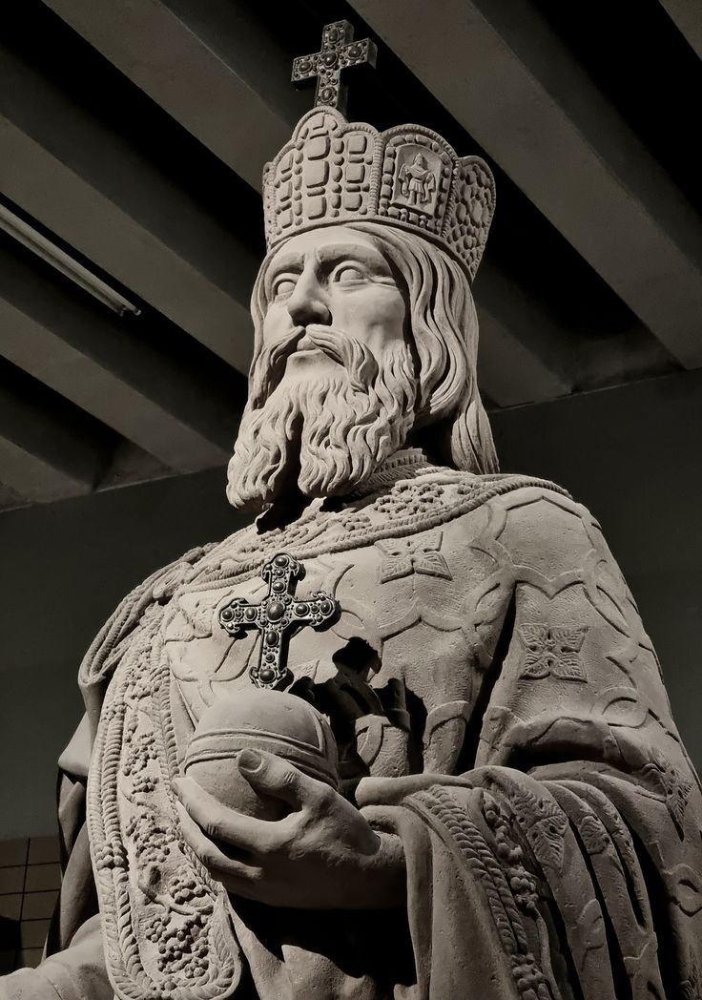
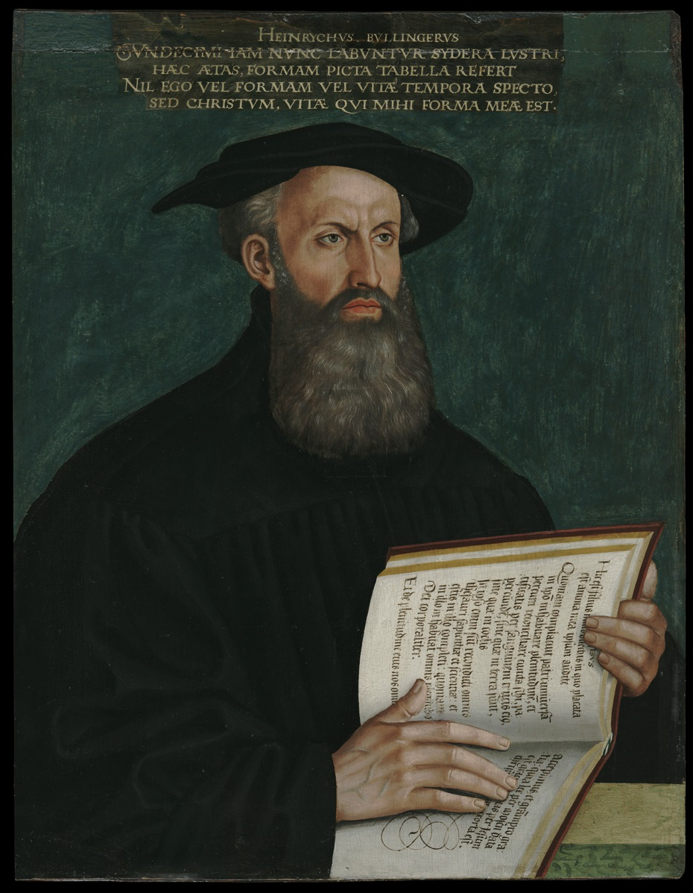
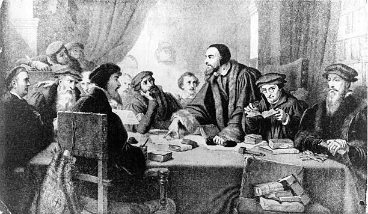

1 Alle ziel zij den machten, over haar gesteld, onderworpen; want er is geen macht dan van God, en de machten, die er zijn, die zijn van God geordineerd.
2 Alzo dat die zich tegen de macht stelt, de ordinantie van God wederstaat; en die ze wederstaan, zullen over zichzelven een oordeel halen.
3 Want de oversten zijn niet tot een vreze den goeden werken, maar den kwaden. Wilt gij nu de macht niet vrezen, doe het goede, en gij zult lof van haar hebben;
4 Want zij is Gods dienares, u ten goede. Maar indien gij kwaad doet, zo vrees; want zij draagt het zwaard niet te vergeefs; want zij is Gods dienares, een wreekster tot straf dengene, die kwaad doet.
5 Daarom is het nodig onderworpen te zijn, niet alleen om der straffe, maar ook om des gewetens wil.
6 Want daarom betaalt gij ook schattingen; want zij zijn dienaars van God, in ditzelve geduriglijk bezig zijnde.
~ Romeinen 13:1-6
De overheid is verplicht God te dienen en dit houdt onder andere in het Christendom te beschermen en alle alternatieve religies en ideologieën uit te roeien en te bevechten. De Staat behoort "Gods dienares" te zijn, en voor "u [de Christenen] ten goede" te werken. Daarnaast behoort
de staat de "wreeker tot straf dengene, die kwaad doet" te zijn. Óf de Staat buigt de knie aan Christus en gehoorzaamt Hem door Zijn Wet te respecteren, óf de Staat negeert Hem door Hem niet te erkennen als Opperkoning en Wetgever. In het laatste geval kan men spoedig de toorn van de Heere op het Vaderland verwachten.
In de belijdenissen van de Reformatie wordt de taak van de overheid ook uiteengezet, zoals hieronder te lezen is.
Jede Art von Obrigkeit ist von Gott selbst eingesetzt zu Frieden und Ruhe des menschlichen Geschlechtes, und zwar so, dass sie in der Welt die oberste Stellung inne hat. Ist sie der Kirche feindlich gesinnt, so kann sie diese schwer hindern und stören. Ist sie ihr aber freundlich gesinnt und sogar ein Glied der Kirche, so ist sie ein höchst nützliches und hervorragendes Glied der Kirche, weil sie ihr sehr viele Vorteile bieten und ihr schließlich auch aufs allerbeste helfen kann. Vornehmste Aufgabe der Obrigkeit ist es, für den Frieden und die öffent-liche Ruhe zu sorgen und sie zu erhalten. Das kann sie natürlich niemals auf glücklichere Weise tun, als wenn sie wahrhaft gottesfürchtig und fromm ist, das heißt nach dem Vorbild der allerheiligsten Könige und Fürsten des Gottesvolkes die Predigt der Wahrheit und den reiner Glauben fördert, Lügen und jeden Aberglauben, samt aller Gottlosigkeit und allem Götzendienst, ausrottet und die Kirche schützt. Also lehren wir, dass einer christlichen Obrigkeit die Sorge für die Religion in erster Linie obliege. Sie soll selbst Gottes Wort zur Hand haben und dafür sorgen, dass nichts ihm Widersprechendes gelehrt werde. Sie regiere ferner das Volk, das ihr von Gott anvertraut ist, mit guten, dem Worte Gottes entsprechenden Gesetzen, und halte es in Zucht, Pflicht und Gehorsam. Die Rechtsprechung übe sie gerecht aus, sehe nicht die Person an und nehme keine Geschenke entgegen; Witwen, Waisen und Bedrängten stehe sie bei; Unge-rechte, Betrüger und Gewalttätige halte sie in Schranken und rotte sie sogar aus. Denn nicht umsonst hat sie von Gott das Schwert empfangen (Röm. 13,4). Sie ziehe deshalb dieses Schwert Gottes gegen alle Verbrecher, Aufrührer, Räuber und Mörder, Bedrücker, Gotteslästerer, Meineidigen und gegen alle die, die Gott zu bestrafen und sogar zu töten befohlen hat. Sie halte in Schranken auch die unbelehrbaren Irrgläubigen – die wirklich Irrgläubige sind! –, wenn sie nicht aufhören, Gottes Majestät zu lästern und die Kirche Gottes zu verwirren, ja zugrunde zu richten. Und falls es nötig ist, sogar durch einen Krieg das Wohl des Volkes wahrzunehmen, so unternehme sie in Gottes Namen den Krieg, sofern sie vorher auf jede Weise den Frieden gesucht hat und nicht anders als durch einen Krieg ihr Volk retten kann. Und wenn die Obrigkeit dies im Glauben tut, dient sie Gott mit alledem als mit wahrhaft guten Werken und empfängt Segen vom Herrn. Wir verwerfen die Lehre der Wiedertäufer, die behaupten, ein Christ dürfe kein obrigkeitliches Amt bekleiden und niemand dürfe von der Obrigkeit mit Recht hingerichtet werden, oder die Obrigkeit dürfe keinen Krieg führen, oder man dürfe der Obrigkeit keinen Eid leisten und dergleichen mehr. Wie also Gott will, dass das Wohl seines Volkes durch die Obrigkeit gewahrt werde, die er der Welt gleichsam wie einen Vater gegeben hat, so ist auch allen Untertanen befohlen, die in der Obrigkeit liegende Guttat Gottes anzuerkennen. Man soll die Obrigkeit deshalb achten und ehren als Dienerin Gottes; man soll sie lieben, ihr ergeben sein, auch für sie wie für einen Vater beten; man soll all ihren gerechten und billigen Befehlen gehorchen und Steuern, Abgaben und was derartige Schuldigkeiten sind, treulich und willig bezahlen. Und wenn es das öffentliche Wohl des Vaterlandes oder die Gerechtigkeit erfordert, und die Obrigkeit not-gedrungen einen Krieg unternimmt, soll man auch das Leben dahingeben und sein Blut für das gemeine Wohl und die Obrigkeit vergießen, und zwar in Gottes Namen, willig, tapfer und frohgemut. Wer sich aber der Obrigkeit widersetzt, der fordert Gottes schweren Zorn gegen sich heraus. Wir verwerfen deshalb alle Verächter der Obrigkeit: Rebellen, Staatsfeinde, aufrührerische Taugenichtse und alle, die sich je und je offen oder auf Umwegen weigern, ihren schuldigen Pflichten zu genügen.
WIR BITTEN GOTT, unseren gütigsten Vater im Himmel. dass er die Häupter des Volkes, auch uns und sein ganzes Volk segne durch Jesus Christus, unseren einzigen Herrn und Heiland; ihm sei Lob und Ehre und Dank von Ewigkeit zu Ewigkeit!
Amen.


